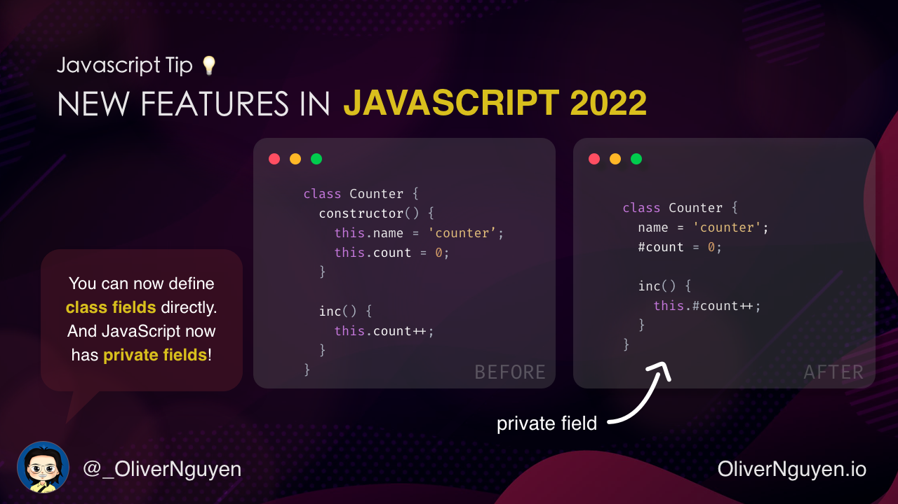
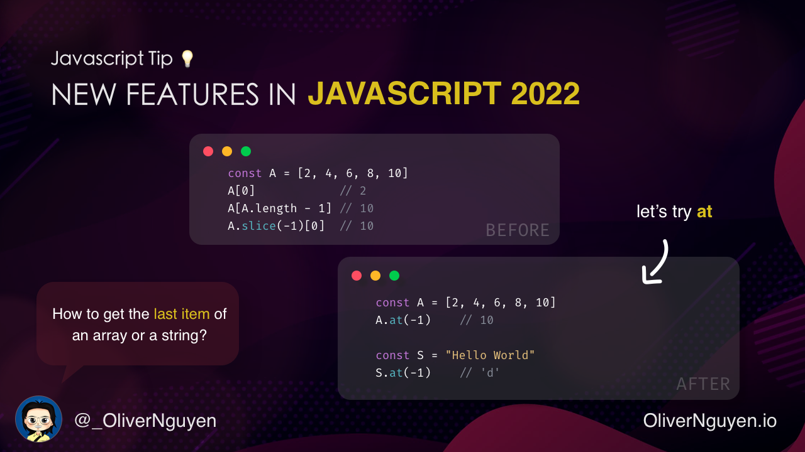
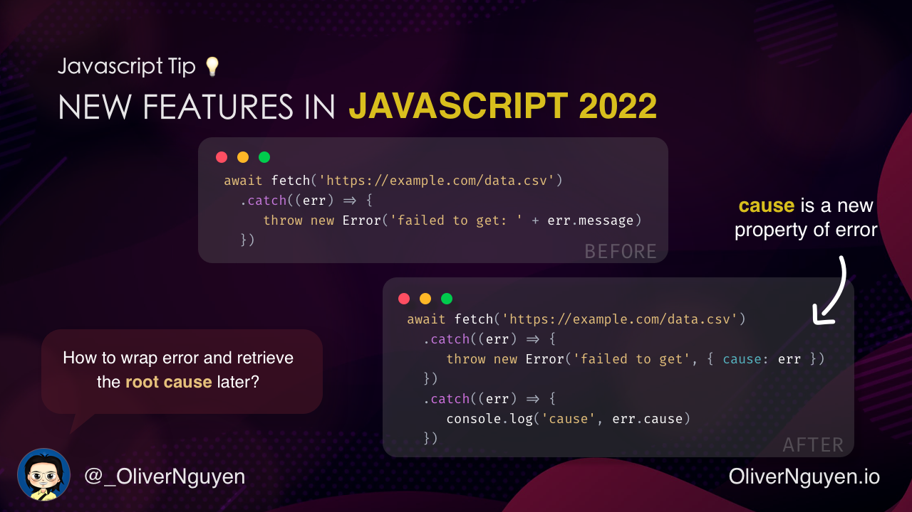

Latest JavaScript features in 2022

JavaScript is changing fast with a lot of new and exciting features to help us - developers write code better and better. These features have been released for a while. Let’s check them out!
1. Private fields

Previously, all class fields must be defined in the constructor. And there is no private fields. All fields can be accessed from outside. Of course, there are tricks with scope to make some variables inaccessible. But let’s not talk about them.
class Counter {
constructor() {
this.name = 'Counter';
this.count = 0;
}
inc() {
this.count++;
}
}
Now we can simply write:
class Counter {
name = 'Counter';
#count = 0; // private field!
inc() {
this.#count++;
}
}
2. Check accessing private fields with in keyword

Private fields come with some problem. When a private field is accessed on an object without it, an error will be
thrown. But how to check if an object has it? Use try/catch!
There is now a better way: in keyword.
class Counter {
name = 'Counter';
#count = 0;
static isCounter(obj) {
return #count in obj;
}
}
const counter = new Counter();
Counter.isCounter(counter); // true
3. at() method for array and string

We can access an item of an array at position i by writing A[i]. But what if i is negative and we want to get the
element from the end of the array? We can write A[A.length + i]. But it’s not very convenient. Another way is use
A.slice(i)[0]. But it’s not very efficient.
There is at() method for this:
const A = [2, 4, 6, 8, 10]
A.at(-1) // 10
const S = "Hello World"
S.at(-1) // 'd'
4. Find an item in an array from the end with findLast()

How to find an item in an array? Use find() method. And how to find from the end? Use reverse() and find(). Or
write your own function:
const A = [1, 20, 3, 40, 5];
function findBackward(A, predicate) {
for (let i = A.length-1; i>=0; i--) {
if (predicate(A[i])) {
return A[i];
}
}
return -1;
}
findBackward(A, x => x % 10 == 0); // 40
// be careful with this function!
A.reverse().find(x => x % 10 == 0); // 40
Now we can use findLast() and findLastIndex() methods:
const A = [1, 20, 3, 40, 5];
A.find(v => v%10 == 0) // 20
A.findLast(v => v%10 == 0) // 40
A.findIndex(v => v%10 == 0) // 1
A.findLastIndex(v => v%10 == 0) // 3
A.findLastIndex(v => v == 0) // -1
5. Let’s use hasOwn() instead of hasOwnProperty()

There is Object.prototype.hasOwnProperty() method to check if an object has a property as its direct property. But
it’s quite cumbersome to use:
let hasOwnProperty = Object.prototype.hasOwnProperty;
if (hasOwnProperty.call(object, 'foo')) {
console.log('has property foo');
}
But why not just write:
object.hasOwnProperty('foo')
Keep in mind that JavaScript is a dynamic language. We can add a property to any object. So hasOwnProperty() can be
shadowed by a property of the object with the same name. To avoid this, we can use hasOwn() method:
if (Object.hasOwn(object, 'foo')) {
console.log('has property foo');
}
6. cause is a new property of error

It’s very common to see error handling code like this:
await fetch('https://example.com/data.csv')
.catch((err) => {
throw new Error('failed to get: ' + err.message);
})
What it does is wrapping the original error with a new error. But the original error is lost. Now we can use cause
property to store the original error and retrieve it later:
await fetch('https://example.com/data.csv')
.catch((err) => {
throw new Error('failed to get', { cause: err })
})
.catch((err) => {
console.log('cause', err.cause)
})
7. #! Hashbang is now supported

Hashbang is now supported. And we can run NodeJS script directly in terminal:
#!/usr/bin/env node
'use strict';
console.log(1);
#!/usr/bin/env node
export {};
console.log(1);
**
I’m Oliver Nguyen. I share about programming, JavaScript, and Go. I created OneSidebar — a browser extension for navigating GitHub. Follow me for more content.
New features in JavaScript 2022
— Oliver Nguyen 👋 (@_OliverNguyen) September 16, 2022
A thread 🧵👇 pic.twitter.com/zrMSfuFCUx